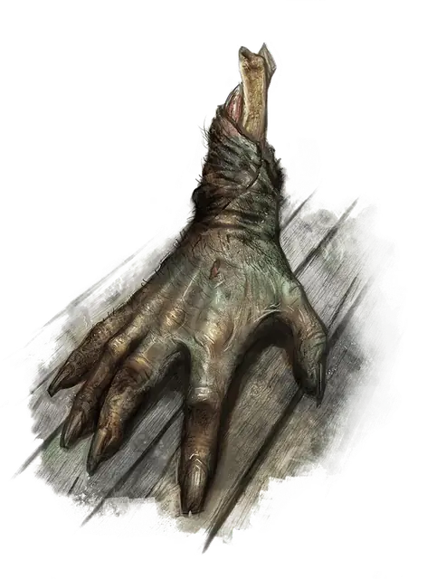

Ползающая рука
Crawling Claw
Крошечная Нежить, Нейтральная Злая

Класс Защиты 12 Инициатива +2 (12)
Хиты 2 (1к4)
Скорость 20 футов, Лазания 20 футов
| мод | спас | ||
|---|---|---|---|
| СИЛ | 13 | +1 | +1 |
| ЛОВ | 14 | +2 | +2 |
| ТЕЛ | 11 | +0 | +0 |
| мод | спас | ||
|---|---|---|---|
| ИНТ | 5 | −3 | −3 |
| МДР | 10 | +0 | +0 |
| ХАР | 4 | −3 | −3 |
Иммунитеты Некротический, Яд; Испуганный, Истощение, Недееспособный, Отравленный, Очарованный
Чувства пассивное Восприятие 10, Слепое зрение 30 футов
Языки понимает Общий, но не говорит
Опасность 0 (10 опыта; БВ +2)
Действия
Удар. Бросок рукопашной атаки: +3, досягаемость 5 фт. Попадание: 2 Некротического урона.
Бонус мастерства +2
Среда обитания Любая
Сокровища Отсутствуют
Ползающие руки
Отсечённые конечности, ведомые злой волей
Ползающие руки — это отрубленные кисти рук, что движутся и действуют по собственной убийственной воле. Эти немёртвые конечности могут оживать из отсечённых рук убийц и злодеев, а зловещие заклинатели порой обращают ползающие руки в гнусных прислужников. Обличья их многообразны: от гниющих кистей Гуманоидов до свежих конечностей зверей и чудовищ.
Одиночные ползающие руки могут продолжать кровавую жатву, которой предавались при жизни. Одни безоглядно набрасываются на живых, другие же преследуют строго определённых жертв. В редких случаях ползающая рука сеет хаос, покуда остальное тело ещё живёт, — и сам владелец тела может даже не подозревать о злодеяниях собственной отсечённой длани.